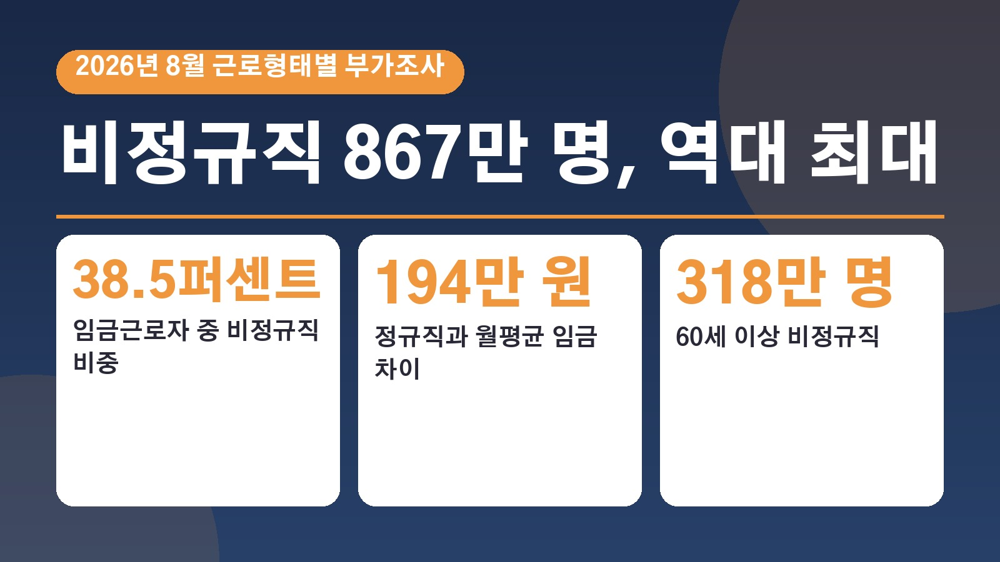
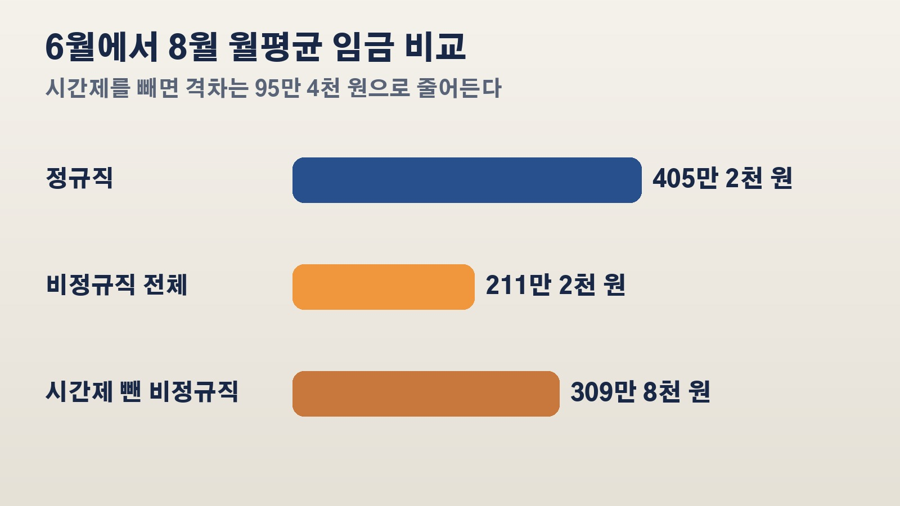

비정규직 867만 명으로 역대 최대, 정규직과 월급 차이 194만 원까지 벌어진 8월 고용 통계

요즘 주변에서 정규직 자리는 잘 안 나오고 계약직이나 시간제 일자리만 보인다는 이야기 많이 들으시죠. 그 느낌이 숫자로 확인됐어요. 국가데이터처가 21일 내놓은 2026년 8월 경제활동인구조사 근로형태별 부가조사 결과를 보면, 비정규직 규모와 비중이 모두 통계를 만든 뒤 가장 높게 나왔고 정규직과의 월급 차이도 가장 크게 벌어졌습니다. 일자리를 찾고 있거나 부모님이 은퇴 뒤 일을 다시 시작하신 분들이라면 눈여겨볼 내용이라 정리해 볼게요.
일하는 사람 열 명 중 네 명꼴, 비정규직 867만 1천 명
올해 8월 기준 비정규직 근로자는 867만 1천 명으로 1년 전보다 10만 3천 명 늘었어요. 2003년 관련 통계를 만든 뒤 가장 큰 규모이고, 2024년부터 3년 연속 늘고 있습니다.
같은 기간 정규직은 1385만 5천 명으로 1만 명 느는 데 그쳤어요. 전체 임금근로자가 11만 3천 명 늘었는데 그 가운데 10만 3천 명이 비정규직이었다는 뜻이에요. 그 결과 임금근로자 2252만 6천 명 중 비정규직 비중은 38.5퍼센트로 0.3퍼센트포인트 올라, 종전 최고였던 2021년 8월의 38.4퍼센트를 넘어섰습니다.
늘어난 쪽은 60세 이상, 70세 이상만 129만 명
증가를 이끈 건 고령층이에요. 60세 이상 비정규직은 318만 명으로 13만 5천 명 늘었고, 전체 비정규직 가운데 60세 이상 비중은 36.7퍼센트로 역시 가장 높았습니다. 70세 이상만 따로 봐도 129만 명으로, 40대 비정규직 118만 4천 명보다 10만 6천 명 많았어요.
반대로 29세 이하는 6만 4천 명, 40대는 2만 명 줄었어요. 데이터처는 청년층과 40대는 인구 자체가 줄어드는 연령대인 데다, 청년층은 고용 상황이 어려워 비정규직 취업자까지 줄어든 영향이 일부 있다고 설명했습니다. 산업별로는 보건 사회복지업이 186만 7천 명으로 가장 많았고 1년 사이 11만 2천 명이 늘었어요.
비정규직 둘 중 한 명은 시간제
일하는 방식으로 나눠 보면 기간이 정해진 한시적 근로자가 603만 5천 명으로 18만 7천 명, 시간제 근로자가 438만 2천 명으로 15만 2천 명 늘었어요. 파견, 용역, 일일 근로자 같은 비전형 근로자는 178만 6천 명으로 4만 8천 명 줄었고요.

전체 비정규직에서 시간제가 차지하는 비중은 50.5퍼센트로 통계 작성 이래 가장 높았어요. 여기서 시간제는 같은 일터에서 같은 일을 하는 사람보다 정해진 근로시간이 한 시간이라도 짧은 경우를 말합니다. 비정규직의 주당 평균 취업시간은 29.5시간, 현 직장 평균 근속기간은 3년이었어요.
월급 405만 2천 원과 211만 2천 원, 시간제를 빼면 95만 4천 원 차이
6월부터 8월까지 석 달 평균 월급을 보면 정규직은 405만 2천 원으로 15만 6천 원 올라 처음으로 400만 원을 넘었어요. 비정규직은 211만 2천 원으로 2만 4천 원 오르는 데 그쳤습니다. 그래서 둘의 차이는 작년 180만 8천 원에서 올해 194만 원으로 13만 2천 원 더 벌어졌고, 비정규직 월급은 정규직의 52.1퍼센트 수준으로 내려갔어요.
다만 이 차이를 그대로 받아들이기 전에 알아 둘 점이 있어요. 이 통계의 월평균 임금은 일한 날수와 시간을 반영하지 않은 숫자예요. 근로시간이 짧은 시간제를 빼고 보면 비정규직 월급은 309만 8천 원으로, 정규직과의 차이는 95만 4천 원, 정규직의 76.5퍼센트 수준이 됩니다. 데이터처도 시간제와 고령층 비정규직이 늘어난 영향이 크다고 봤어요.
국민연금 가입률 36.5퍼센트, 일자리를 고를 때 같이 볼 숫자
월급 말고도 차이가 나는 부분이 있어요. 비정규직의 사회보험 가입률은 국민연금 36.5퍼센트, 건강보험 53.0퍼센트로 1년 전보다 조금씩 떨어졌고, 고용보험은 54.0퍼센트로 조금 올랐습니다. 정규직은 국민연금 88.6퍼센트, 건강보험 95.7퍼센트, 고용보험 93.0퍼센트였어요. 퇴직급여 45.7퍼센트, 상여금 39.2퍼센트 등 비정규직이 받는 처우 항목 비율도 모두 낮아졌고요.
한편 비정규직 가운데 스스로 이 근로형태를 골랐다는 비율은 68.0퍼센트였고, 그 이유로는 근로조건에 만족한다는 답이 59.9퍼센트로 가장 많았어요. 계약직이나 시간제 자리를 알아보고 계신다면 월급만이 아니라 국민연금, 고용보험 같은 사회보험과 퇴직급여가 되는 자리인지도 함께 살펴볼 만하다는 걸 이번 숫자가 보여 줍니다. 모든 수치는 2026년 8월 조사 기준이에요.
참고한 기사: 연합뉴스 정규직 405만원 비정규직 211만원 또 벌어진 월급 격차 2026년 10월 21일, 매일신문 비정규직 867만명 역대 최대 정규직과 월급 차이 194만원 2026년 10월 21일, 국가데이터처 2026년 8월 경제활동인구조사 근로형태별 부가조사 결과
태그
비정규직 비정규직역대최대 정규직비정규직임금격차 근로형태별부가조사 국가데이터처 시간제근로자 고령층일자리 경제활동인구조사 사회보험가입률 월평균임금